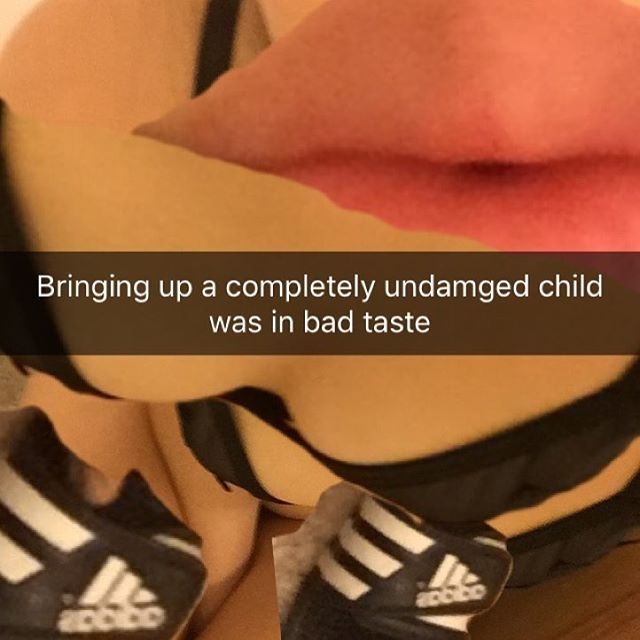

Every week for 3 months, I made 5 images based on tweets from a now-defunct account called @nytoutofcontext. I invented an artist, Quinby Abbott, as the creator of these works, and made a website for Quinby here.
Here are the works in chronological order:

Created: 2026-08-30
Last updated: 2026-08-30